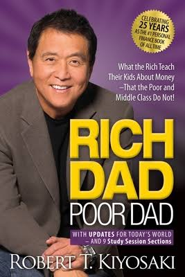

Rich Dad Poor Dad
Robert Kiyosaki
Discover the secrets to financial independence and wealth accumulation in "Rich Dad Poor Dad." Robert Kiyosaki shares his personal journey and insights into financial literacy, challenging traditional beliefs about money and opening the doors to a new mindset. This book offers valuable lessons on assets, liabilities, and the importance of financial education, empowering you to take control of your financial future and build a legacy of wealth.
The Intelligent Investor
Benjamin Graham

Unleash the power of intelligent investing with "The Intelligent Investor." Benjamin Graham, the father of value investing, provides timeless wisdom and strategies for making informed investment decisions. From analyzing stocks to managing risk, this book equips you with the knowledge and mindset to navigate the unpredictable world of finance and build a resilient portfolio.
The Psychology of Money: Timeless Lessons on Wealth, Greed, and Happiness
MORGAN HOUSEL

Explore the complex relationship between money and human behavior in "The Psychology of Money." Morgan Housel delves into the psychological and emotional aspects of finance, offering valuable insights on wealth accumulation, decision-making, and the pursuit of happiness. By understanding the underlying drivers of financial success, this book guides you towards a healthier and more balanced relationship with money.
The Wealth of Nations
Adam Smith
Delve into the foundational principles of economics and capitalism in "The Wealth of Nations." Adam Smith's timeless masterpiece explores the factors that drive economic prosperity, emphasizing the importance of free markets, specialization, and the division of labor. By understanding the fundamental workings of economies, this book provides a comprehensive perspective on wealth creation and its impact on society.
The Little Book of Common Sense Investing
John C. Bogle
Unlock the secrets of passive investing and long-term wealth creation with "The Little Book of Common Sense Investing." John C. Bogle, the founder of Vanguard Group, champions the benefits of low-cost index funds and highlights the pitfalls of active trading. This book offers a practical and straightforward approach to investing, enabling you to build a diversified portfolio and achieve financial success.
Security Analysis
Benjamin Graham and David Dodd
Equip yourself with the tools and techniques for evaluating investment opportunities in "Security Analysis." Benjamin Graham and David Dodd provide a comprehensive framework for analyzing stocks and bonds, emphasizing the importance of thorough research and fundamental analysis. This book serves as a timeless guide for investors seeking to make informed decisions and build a resilient investment portfolio.
Common Stocks and Uncommon Profits
Philip Fisher
Unlock the secrets to successful stock investing with "Common Stocks and Uncommon Profits." Philip Fisher shares his time-tested investment philosophy, focusing on understanding a company's qualitative factors, management, and long-term growth potential. This book offers invaluable insights into identifying promising investment opportunities and building wealth through astute stock selection.
A Random Walk Down Wall Street
Burton Malkiel
Challenge the notion of market timing and embrace a passive investment approach with "A Random Walk Down Wall Street." Burton Malkiel explores the efficient market hypothesis and advocates for a diversified portfolio of low-cost index funds. This book provides a compelling argument for long-term investing, helping you navigate the complexities of the financial markets and achieve solid returns.
Manias, Panics, and Crashes: A History of Financial Crises
Charles P. Kindleberger
Uncover the patterns and lessons from historical financial crises in "Manias, Panics, and Crashes." Charles P. Kindleberger offers a comprehensive examination of the recurring cycles of booms and busts in financial markets. By understanding the dynamics and commonalities of past crises, this book provides valuable insights into recognizing and mitigating the risks associated with speculative bubbles and market downturns.
The Black Swan: The Impact of the Highly Improbable
Nassim Nicholas Taleb
Challenge your understanding of risk and uncertainty in "The Black Swan." Nassim Nicholas Taleb explores the profound impact of rare and unpredictable events, highlighting the limitations of traditional risk models. This book encourages a mindset of resilience and adaptability, helping you navigate the volatile and unpredictable nature of the world and make more informed decisions in an uncertain environment.